A brand with no digital home.
The Wisconsin Design Team's clothing brand merges innovative fashion with local flair, producing unique, high-quality apparel that reflects Wisconsin's culture and campus pride. With no existing app, their digital presence was limited — which is what inspired my team to design a prototype app to enhance accessibility and customer engagement.
The app aims to streamline the online shopping experience, showcase new designs, and build a stronger connection with their audience — positioning the brand for broader outreach and modernized growth.
13 weeks, start to finish.
The project moved from research to a finished high-fidelity prototype over a single semester: weeks of research, sketches and wireframes, a full prototype, and a final pass of UI polish.
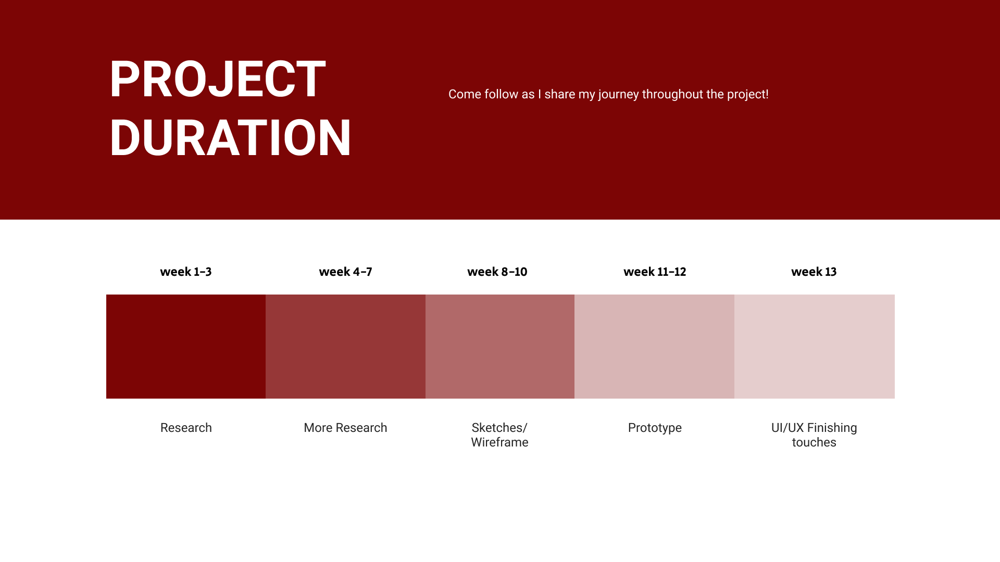
Confusing, and nowhere to shop from your phone.
The Wisconsin Design Team's existing website made it difficult for customers to identify the brand's core purpose. Navigation was confusing, the aesthetic needed work, and — most importantly — there was no mobile app at all.
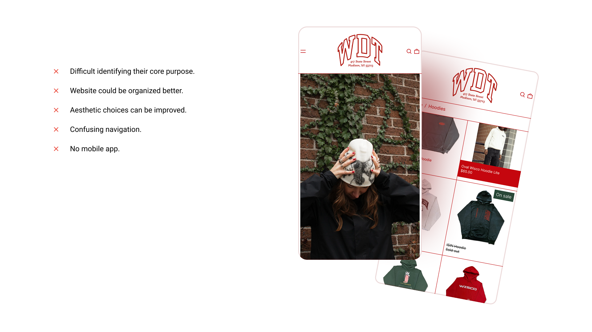
A redesigned, community-first app.
We proposed a redesigned platform that's intuitive, visually appealing, and well-organized — one that prioritizes user-friendly navigation, cohesive aesthetics, and clear communication of the brand's purpose: fostering community and celebrating student life.
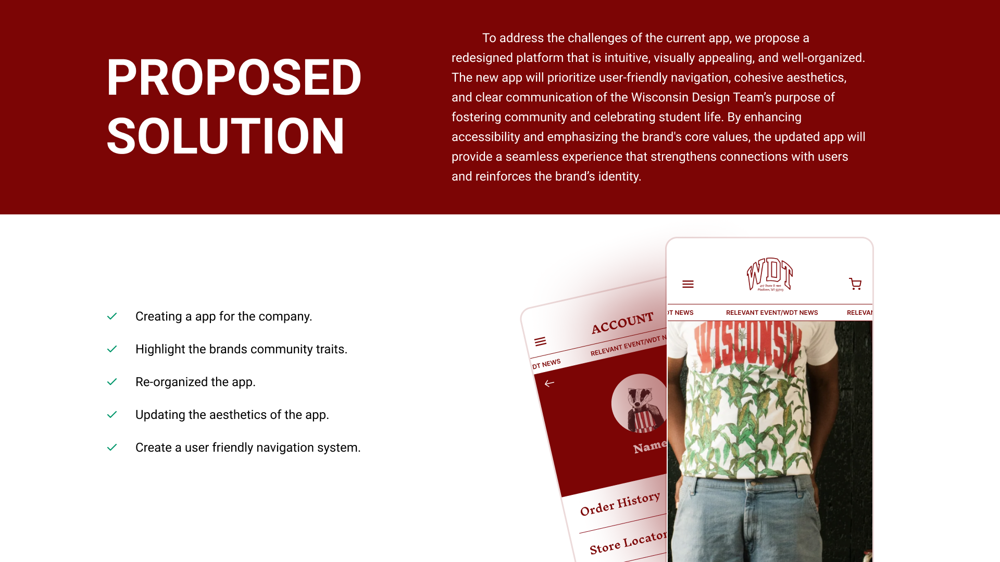
Understanding a campus community.
My research aimed to design an app that caters to a diverse range of customers while ensuring a seamless, intuitive navigation experience for everyone — from current students to alumni still buying gear years later.
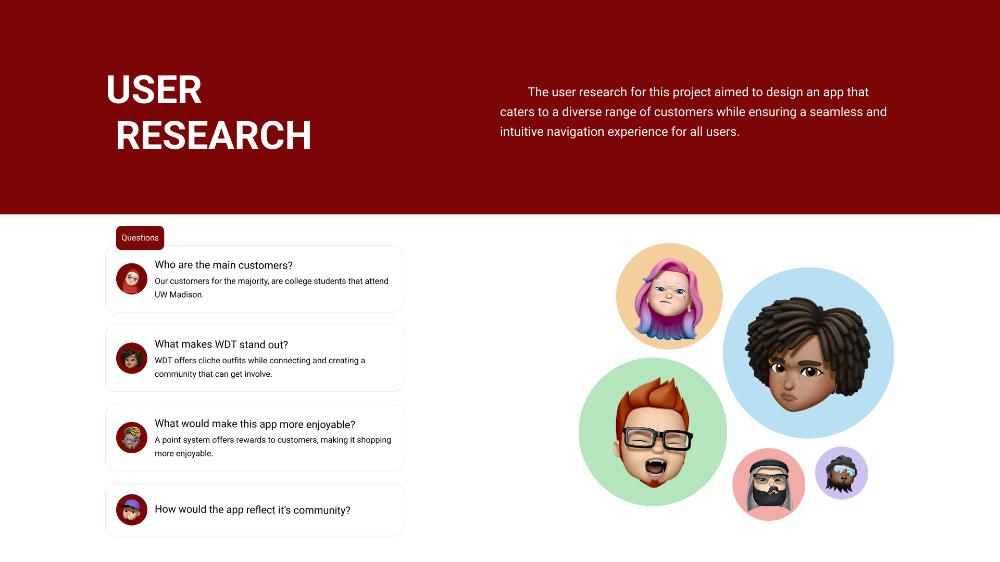
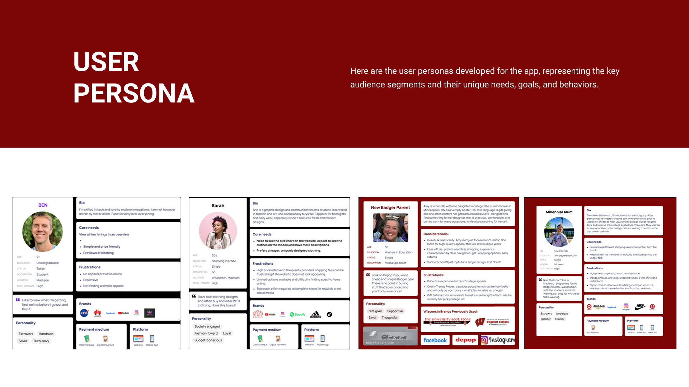
Mapping the experience.
Before any screens were designed, I mapped out the app's information architecture and the core user flows — how someone browses and buys merchandise from open to checkout.
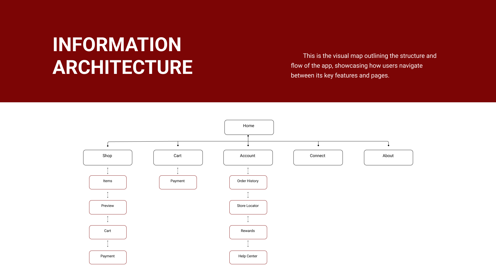
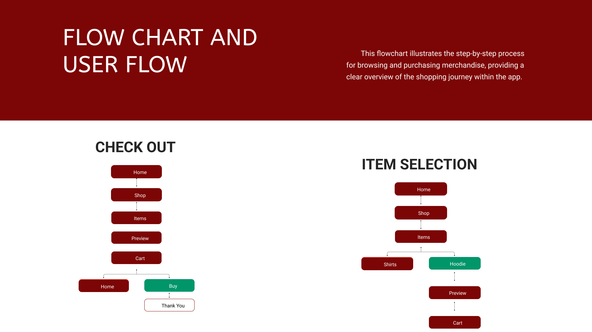
A cohesive visual identity.
The design system pairs a 60-30-10 color rule with the WDT crest, Inter for body text, and Inknut Antique for headings — reinforcing the brand's collegiate, community-first character across every screen.
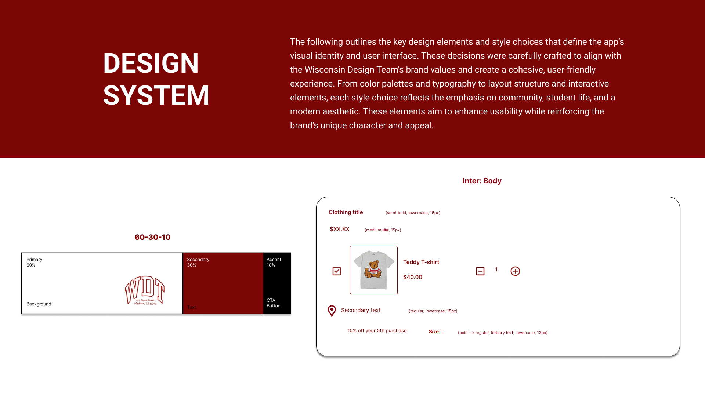
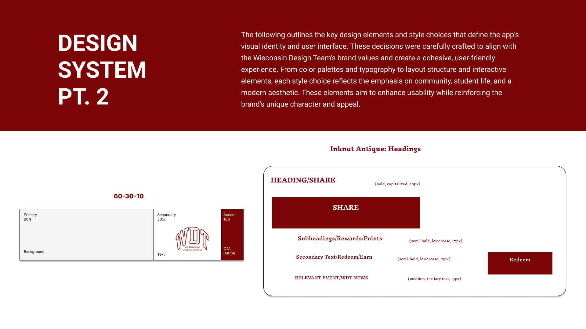
High-fidelity screens.
The final app design showcases student models prominently on the home screen, streamlines payment with saved methods, and rounds out the experience with browsing, cart, account, and rewards flows.
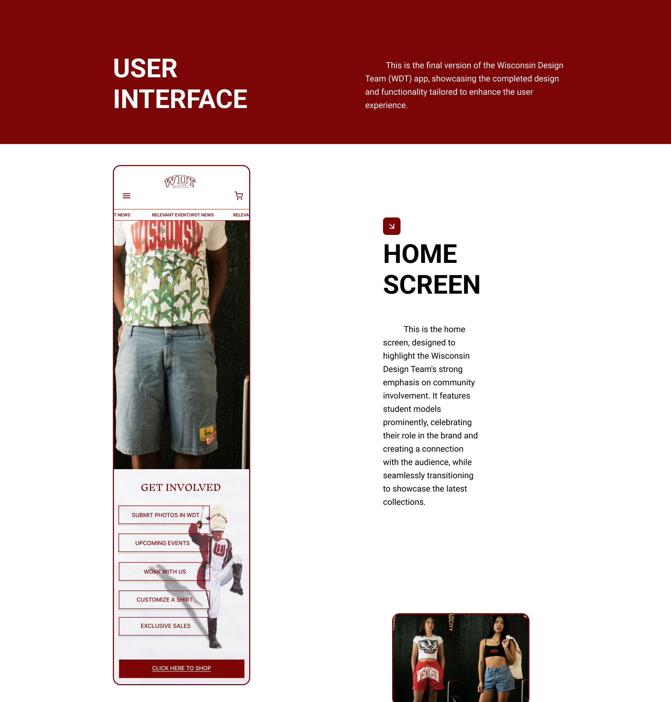
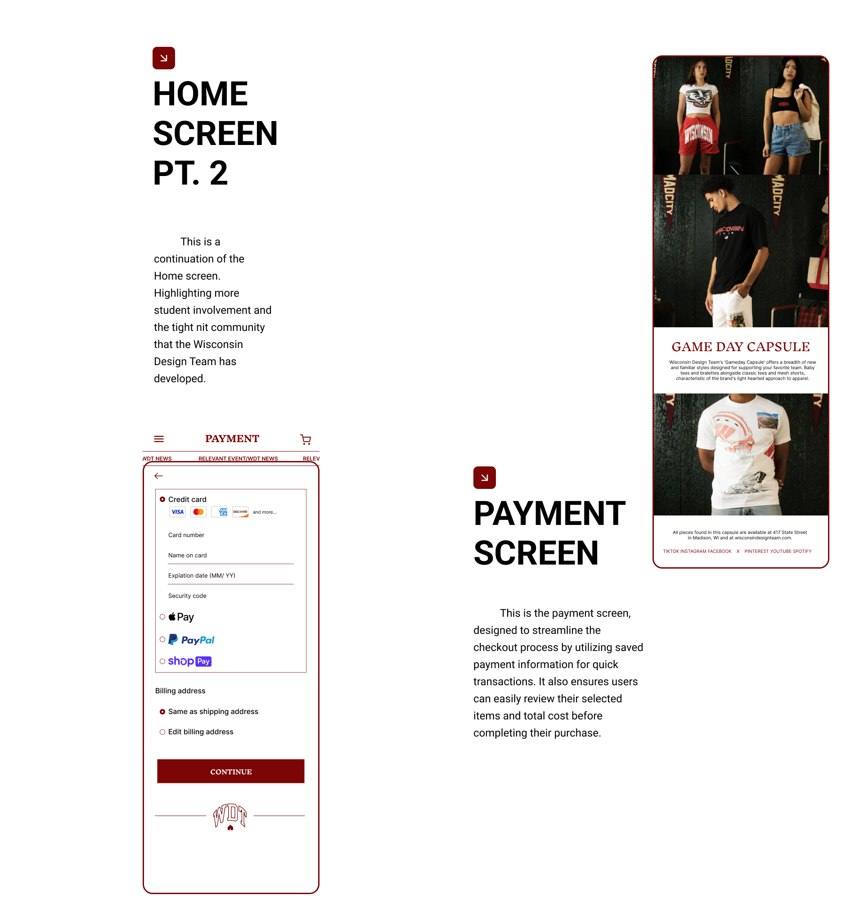
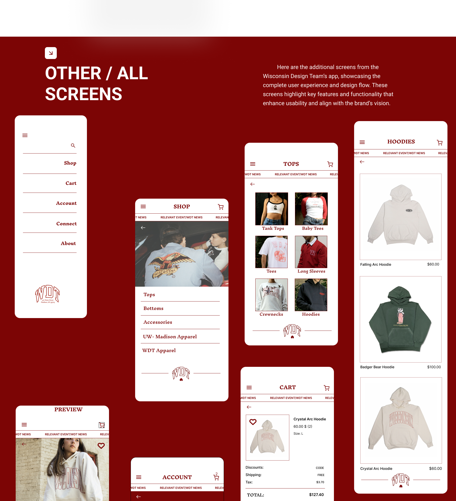
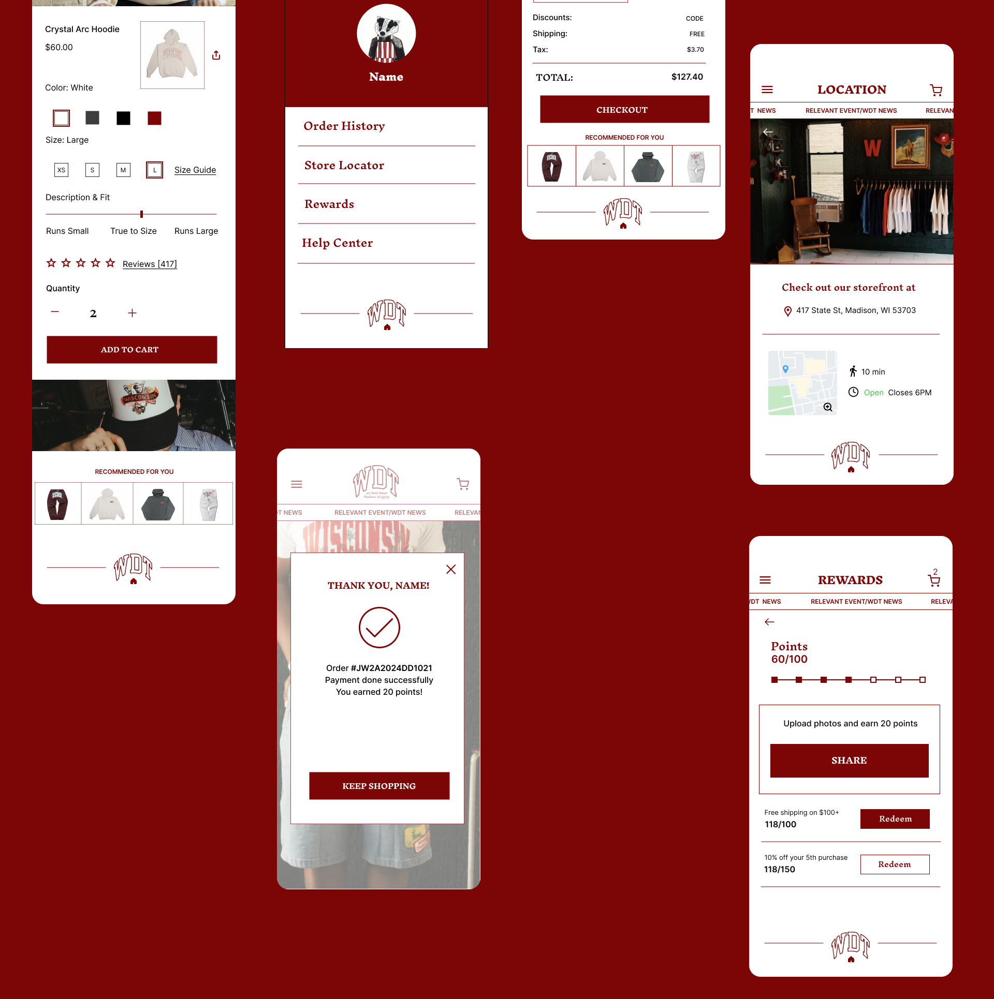
What I learned.
This project reinforced how essential thorough user research is to identifying real pain points, and deepened my understanding of building intuitive, visually cohesive interfaces for a diverse audience. Balancing creativity with usability — and iterating until both goals were met — was the throughline of the whole semester.
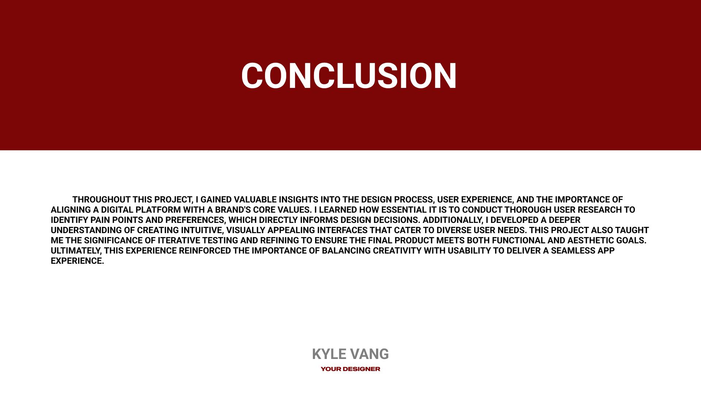